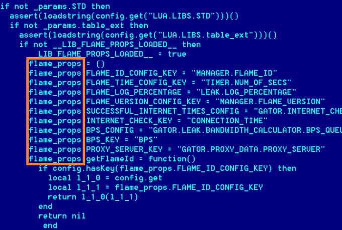
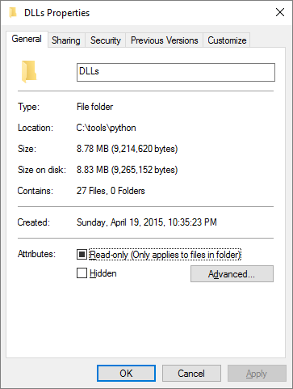
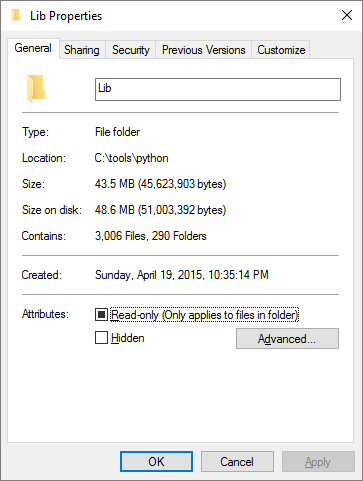

Lua
A Fun Little Language
What, exactly, is Lua?
Created 1993 by Tecgraf of PUC-Rio
Portuguese for “moon”
Why should I care?
There's no shortage of scripting languages available...
https://en.wikipedia.org/wiki/Category:Scripting_languagesLua is…
- Fast
- Small
- Really easy to embed
Application and Service Scripting
Some applications using Lua:


Even viruses use Lua!
Flame virus screenshot from Kaspersky Lab
Example: CloudFlare

From Nginx + C modules to OpenResty (Nginx + LuaJIT)
Games
- 2003
- Most popular scripting language (GameDev.net)
- 2011
- Front Line Award winner (Game Developer)
Just a few of the games made using Lua…


Lua-powered game engines:

See stackoverflow.com/q/5053134 for more.
How do I write Lua?
Programming in Lua
www.lua.org/pil/
Lua 5.3 Reference Manual
www.lua.org/manual/5.3/
Lua Tutorial
lua-users.org/wiki/LuaTutorial
Learn Lua in 15 Minutes tylerneylon.com/a/learn-lua/
-- Two dashes start a one-line comment.
--[[
Adding two ['s and ]'s makes it a
multi-line comment.
--]]
----------------------------------------------------
-- 1. Variables and flow control.
----------------------------------------------------
num = 42 -- All numbers are doubles.
-- Don't freak out, 64-bit doubles have 52 bits for
-- storing exact int values; machine precision is
-- not a problem for ints that need < 52 bits.
s = 'walternate' -- Immutable strings like Python.
t = "double-quotes are also fine"
u = [[ Double brackets
start and end
multi-line strings.]]
t = nil -- Undefines t; Lua has garbage collection.
-- Blocks are denoted with keywords like do/end:
while num < 50 do
num = num + 1 -- No ++ or += type operators.
end
-- If clauses:
if num > 40 then
print('over 40')
elseif s ~= 'walternate' then -- ~= is not equals.
-- Equality check is == like Python; ok for strs.
io.write('not over 40\n') -- Defaults to stdout.
else
-- Variables are global by default.
thisIsGlobal = 5 -- Camel case is common.
-- How to make a variable local:
local line = io.read() -- Reads next stdin line.
-- String concatenation uses the .. operator:
print('Winter is coming, ' .. line)
end
-- Undefined variables return nil.
-- This is not an error:
foo = anUnknownVariable -- Now foo = nil.
aBoolValue = false
-- Only nil and false are falsy; 0 and '' are true!
if not aBoolValue then print('twas false') end
-- 'or' and 'and' are short-circuited.
-- This is similar to the a?b:c operator in C/js:
ans = aBoolValue and 'yes' or 'no' --> 'no'
karlSum = 0
for i = 1, 100 do -- The range includes both ends.
karlSum = karlSum + i
end
-- Use "100, 1, -1" as the range to count down:
fredSum = 0
for j = 100, 1, -1 do fredSum = fredSum + j end
-- In general, the range is begin, end[, step].
-- Another loop construct:
repeat
print('the way of the future')
num = num - 1
until num == 0
----------------------------------------------------
-- 2. Functions.
----------------------------------------------------
function fib(n)
if n < 2 then return 1 end
return fib(n - 2) + fib(n - 1)
end
-- Closures and anonymous functions are ok:
function adder(x)
-- The returned function is created when adder is
-- called, and remembers the value of x:
return function (y) return x + y end
end
a1 = adder(9)
a2 = adder(36)
print(a1(16)) --> 25
print(a2(64)) --> 100
-- Returns, func calls, and assignments all work
-- with lists that may be mismatched in length.
-- Unmatched receivers are nil;
-- unmatched senders are discarded.
x, y, z = 1, 2, 3, 4
-- Now x = 1, y = 2, z = 3, and 4 is thrown away.
function bar(a, b, c)
print(a, b, c)
return 4, 8, 15, 16, 23, 42
end
x, y = bar('zaphod') --> prints "zaphod nil nil"
-- Now x = 4, y = 8, values 15..42 are discarded.
-- Functions are first-class, may be local/global.
-- These are the same:
function f(x) return x * x end
f = function (x) return x * x end
-- And so are these:
local function g(x) return math.sin(x) end
local g; g = function (x) return math.sin(x) end
-- the 'local g' decl makes g-self-references ok.
-- Trig funcs work in radians, by the way.
-- Calls with one string param don't need parens:
print 'hello' -- Works fine.
----------------------------------------------------
-- 3. Tables.
----------------------------------------------------
-- Tables = Lua's only compound data structure;
-- they are associative arrays.
-- Similar to php arrays or js objects, they are
-- hash-lookup dicts that can also be used as lists.
-- Using tables as dictionaries / maps:
-- Dict literals have string keys by default:
t = {key1 = 'value1', key2 = false}
-- String keys can use js-like dot notation:
print(t.key1) -- Prints 'value1'.
t.newKey = {} -- Adds a new key/value pair.
t.key2 = nil -- Removes key2 from the table.
-- Literal notation for any (non-nil) value as key:
u = {['@!#'] = 'qbert', [{}] = 1729, [6.28] = 'tau'}
print(u[6.28]) -- prints "tau"
-- Key matching is basically by value for numbers
-- and strings, but by identity for tables.
a = u['@!#'] -- Now a = 'qbert'.
b = u[{}] -- We might expect 1729, but it's nil:
-- b = nil since the lookup fails. It fails
-- because the key we used is not the same object
-- as the one used to store the original value. So
-- strings & numbers are more portable keys.
-- A one-table-param function call needs no parens:
function h(x) print(x.key1) end
h{key1 = 'Sonmi~451'} -- Prints 'Sonmi~451'.
for key, val in pairs(u) do -- Table iteration.
print(key, val)
end
-- _G is a special table of all globals.
print(_G['_G'] == _G) -- Prints 'true'.
-- Using tables as lists / arrays:
-- List literals implicitly set up int keys:
v = {'value1', 'value2', 1.21, 'gigawatts'}
for i = 1, #v do -- #v is the size of v for lists.
print(v[i]) -- Indices start at 1 !! SO CRAZY!
end
-- A 'list' is not a real type. v is just a table
-- with consecutive integer keys, treated as a list.
----------------------------------------------------
-- 3.1 Metatables and metamethods.
----------------------------------------------------
-- A table can have a metatable that gives the table
-- operator-overloadish behavior. Later we'll see
-- how metatables support js-prototypey behavior.
f1 = {a = 1, b = 2} -- Represents the fraction a/b.
f2 = {a = 2, b = 3}
-- This would fail:
-- s = f1 + f2
metafraction = {}
function metafraction.__add(f1, f2)
sum = {}
sum.b = f1.b * f2.b
sum.a = f1.a * f2.b + f2.a * f1.b
return sum
end
setmetatable(f1, metafraction)
setmetatable(f2, metafraction)
s = f1 + f2 -- call __add(f1, f2) on f1's metatable
-- f1, f2 have no key for their metatable, unlike
-- prototypes in js, so you must retrieve it as in
-- getmetatable(f1). The metatable is a normal table
-- with keys that Lua knows about, like __add.
-- But the next line fails since s has no metatable:
-- t = s + s
-- Class-like patterns given below would fix this.
-- An __index on a metatable overloads dot lookups:
defaultFavs = {animal = 'gru', food = 'donuts'}
myFavs = {food = 'pizza'}
setmetatable(myFavs, {__index = defaultFavs})
eatenBy = myFavs.animal -- works! thanks, metatable
-- Direct table lookups that fail will retry using
-- the metatable's __index value, and this recurses.
-- An __index value can also be a function(tbl, key)
-- for more customized lookups.
-- Values of __index,add, .. are called metamethods.
-- Full list. Here a is a table with the metamethod.
-- __add(a, b) for a + b
-- __sub(a, b) for a - b
-- __mul(a, b) for a * b
-- __div(a, b) for a / b
-- __mod(a, b) for a % b
-- __pow(a, b) for a ^ b
-- __unm(a) for -a
-- __concat(a, b) for a .. b
-- __len(a) for #a
-- __eq(a, b) for a == b
-- __lt(a, b) for a < b
-- __le(a, b) for a <= b
-- __index(a, b) for a.b
-- __newindex(a, b, c) for a.b = c
-- __call(a, ...) for a(...)
----------------------------------------------------
-- 3.2 Class-like tables and inheritance.
----------------------------------------------------
-- Classes aren't built in; there are different ways
-- to make them using tables and metatables.
-- Explanation for this example is below it.
Dog = {} -- 1.
function Dog:new() -- 2.
newObj = {sound = 'woof'} -- 3.
self.__index = self -- 4.
return setmetatable(newObj, self) -- 5.
end
function Dog:makeSound() -- 6.
print('I say ' .. self.sound)
end
mrDog = Dog:new() -- 7.
mrDog:makeSound() -- 'I say woof' -- 8.
-- 1. Dog acts like a class; it's really a table.
-- 2. function tablename:fn(...) is the same as
-- function tablename.fn(self, ...)
-- The : just adds a first arg called self.
-- Read 7 & 8 below for how self gets its value.
-- 3. newObj will be an instance of class Dog.
-- 4. self = the class being instantiated. Often
-- self = Dog, but inheritance can change it.
-- newObj gets self's functions when we set both
-- newObj's metatable and self's __index to self.
-- 5. Reminder: setmetatable returns its first arg.
-- 6. The : works as in 2, but this time we expect
-- self to be an instance instead of a class.
-- 7. Same as Dog.new(Dog), so self = Dog in new().
-- 8. Same as mrDog.makeSound(mrDog); self = mrDog.
----------------------------------------------------
-- Inheritance example:
LoudDog = Dog:new() -- 1.
function LoudDog:makeSound()
s = self.sound .. ' ' -- 2.
print(s .. s .. s)
end
seymour = LoudDog:new() -- 3.
seymour:makeSound() -- 'woof woof woof' -- 4.
-- 1. LoudDog gets Dog's methods and variables.
-- 2. self has a 'sound' key from new(), see 3.
-- 3. Same as LoudDog.new(LoudDog), and converted to
-- Dog.new(LoudDog) as LoudDog has no 'new' key,
-- but does have __index = Dog on its metatable.
-- Result: seymour's metatable is LoudDog, and
-- LoudDog.__index = LoudDog. So seymour.key will
-- = seymour.key, LoudDog.key, Dog.key, whichever
-- table is the first with the given key.
-- 4. The 'makeSound' key is found in LoudDog; this
-- is the same as LoudDog.makeSound(seymour).
-- If needed, a subclass's new() is like the base's:
function LoudDog:new()
newObj = {}
-- set up newObj
self.__index = self
return setmetatable(newObj, self)
end
----------------------------------------------------
-- 4. Modules.
----------------------------------------------------
-- Suppose the file mod.lua looks like this:
local M = {}
local function sayMyName()
print('Hrunkner')
end
function M.sayHello()
print('Why hello there')
sayMyName()
end
return M
-- Another file can use mod.lua's functionality:
local mod = require('mod') -- Run the file mod.lua.
-- require is the standard way to include modules.
-- require acts like: (if not cached; see below)
local mod = (function ()
end)()
-- It's like mod.lua is a function body, so that
-- locals inside mod.lua are invisible outside it.
-- This works because mod here = M in mod.lua:
mod.sayHello() -- Says hello to Hrunkner.
-- This is wrong; sayMyName only exists in mod.lua:
mod.sayMyName() -- error
-- require's return values are cached so a file is
-- run at most once, even when require'd many times.
-- Suppose mod2.lua contains "print('Hi!')".
local a = require('mod2') -- Prints Hi!
local b = require('mod2') -- Doesn't print; a=b.
-- dofile is like require without caching:
dofile('mod2.lua') --> Hi!
dofile('mod2.lua') --> Hi! (runs it again)
-- loadfile loads a lua file but doesn't run it yet.
f = loadfile('mod2.lua') -- Call f() to run it.
-- loadstring is loadfile for strings.
g = loadstring('print(343)') -- Returns a function.
g() -- Prints out 343; nothing printed before now.
----------------------------------------------------
-- 5. References.
----------------------------------------------------
--[[
I was excited to learn Lua so I could make games
with the Löve 2D game engine. That's the why.
I started with BlackBulletIV's Lua for programmers.
Next I read the official Programming in Lua book.
That's the how.
It might be helpful to check out the Lua short
reference on lua-users.org.
The main topics not covered are standard libraries:
* string library
* table library
* math library
* io library
* os library
By the way, this entire file is valid Lua; save it
as learn.lua and run it with "lua learn.lua" !
This was first written for tylerneylon.com. It's
also available as a github gist. Tutorials for other
languages, in the same style as this one, are here:
http://learnxinyminutes.com/
Have fun with Lua!
--]] What are Lua's bad parts?
1-based indexing
names = { 'Alice', 'Bob', 'Charlie' }
print names[1]
-- prints 'Alice'
names[0] = 'Phil'
-- This is legal, but table.sort, #names, etc. will be confusedEdsger Dijkstra, “Why numbering should start at 0,” 1982
So: the technical reason we started counting arrays at zero is that in the mid-1960’s, you could shave a few cycles off of a program’s compilation time on an IBM 7094. The social reason is that we had to save every cycle we could, because if the job didn’t finish fast it might not finish at all and you never know when you’re getting bumped off the hardware because the President of IBM just called and #$@&% your thesis, it’s yacht-racing time.
—Mike Hoye, “Citation Needed”
1-based indexing
Who cares? Use an iterator:
names = { 'Alice', 'Bob', 'Charlie' }
for i, v in ipairs(names)
print v
endSmall standard library
Some of the functionality I miss in Lua:
- Filesystem
- Regexes
- Networking
- JSON
- string.startsWith
- string.endsWith
- string.trim
- Case conversions
- Class creation
- math.round
- Pretty-printing tables
- table.clone
- Deep equality
- Extract a table's values…
- …or keys
Comparison: Python
 It's not all bad...
-- Pattern matching from http://www.lua.org/pil/20.2.html
-- Not as powerful as regexes, but still nice.
s = "Deadline is 30/05/1999, firm"
date = "%d%d/%d%d/%d%d%d%d"
print(string.sub(s, string.find(s, date)))
-- outputs "30/05/1999"
-- Search-and-replace: Replace all non-letters
print(string.gsub("hello, up-down!", "%A", "."))
-- outputs "hello..up.down. 4"-- printf-style string formatting
val = 1
print(("%3i"):format(val))
-- outputs " 1"
-- Take THAT, JavaScript!Incompatible implementations
Lua 5.3 (and 5.2)
- Integers
i = 3 -- Integer n = 2.0 -- Float print(type(i)) -- "number" print(type(n)) -- "number" print(i/n) -- "1.5" print(i//n) -- "1" - Bitwise operators
- UTF-8 support ("\u" string literals, "utf8" module)
- "goto" statement
for z=1,10 do for y=1,10 do for x=1,10 do if x^2 + y^2 == z^2 then print('found a Pythagorean triple:', x, y, z) print('now trying next z...') goto zcontinue end end end ::zcontinue:: end - Finalizers
Incompatible Implementations
LuaJIT
- Fast
- Really fast
- You just won't believe how vastly, hugely, mind-bogglingly fast it is.
- I mean, you may think that V8 is fast, but that's just peanuts to LuaJIT. (with apologies to Douglas Adams)
What tools should I know about?
Resources
-
FAQs
lua-users wiki
Lua Gotchas -
Online REPL (Read-Evaluate-Print Loop)
repl.it -
Package manager
LuaRocks -
IDE
ZeroBrane Studio -
Alternative languages
MoonScript
Image credits
- PUC-Rio campus building - Ligado Na Facul
- Moon - by Gregory H. Revera, own work
- Flame virus screenshot - Kaspersky Lab
- World of Warcraft screenshot - Games-pc-download.com
- Stopwatch - by Troy Bradbury, Flickr
All logos and trademarks are copyright of their respective holders.